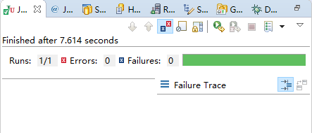

编写单元测试可以帮助开发人员编写高质量的代码，提升代码质量，减少Bug，便于重构。Spring Boot提供了一些实用程序和注解，用来帮助我们测试应用程序，在Spring Boot中开启单元测试只需引入spring-boot-starter-test即可，其包含了一些主流的测试库。本文主要介绍基于 Service和Controller的单元测试。
引入spring-boot-starter-test：
运行Maven命令dependency:tree可看到其包含了以下依赖：
JUnit，标准的单元测试Java应用程序；
Spring Test & Spring Boot Test，对Spring Boot应用程序的单元测试提供支持；
Mockito, Java mocking框架，用于模拟任何Spring管理的Bean，比如在单元测试中模拟一个第三方系统Service接口返回的数据，而不会去真正调用第三方系统；
AssertJ，一个流畅的assertion库，同时也提供了更多的期望值与测试返回值的比较方式；
Hamcrest，库的匹配对象（也称为约束或谓词）；
JsonPath，提供类似XPath那样的符号来获取JSON数据片段；
JSONassert，对JSON对象或者JSON字符串断言的库。
一个标准的Spring Boot测试单元应有如下的代码结构：
知识准备
JUnit4注解
JUnit4中包含了几个比较重要的注解：@BeforeClass、@AfterClass、@Before、@After和@Test。其中， @BeforeClass和@AfterClass在每个类加载的开始和结束时运行，必须为静态方法；而@Before和@After则在每个测试方法开始之前和结束之后运行。见如下例子：
运行输出如下：
从上面的输出可以看出各个注解的运行时机。
Assert
上面代码中，我们使用了Assert类提供的assert口方法，下面列出了一些常用的assert方法：
assertEquals("message",A,B)，判断A对象和B对象是否相等，这个判断在比较两个对象时调用了equals()方法。assertSame("message",A,B)，判断A对象与B对象是否相同，使用的是==操作符。assertTrue("message",A)，判断A条件是否为真。assertFalse("message",A)，判断A条件是否不为真。assertNotNull("message",A)，判断A对象是否不为null。assertArrayEquals("message",A,B)，判断A数组与B数组是否相等。
MockMvc
下文中，对Controller的测试需要用到MockMvc技术。MockMvc，从字面上来看指的是模拟的MVC，即其可以模拟一个MVC环境，向Controller发送请求然后得到响应。
在单元测试中，使用MockMvc前需要进行初始化，如下所示：
MockMvc模拟MVC请求
模拟一个get请求：
模拟一个post请求：
模拟文件上传：
模拟请求参数：
也可以直接使用MultiValueMap构建参数：
模拟发送JSON参数：
实际测试中，要手动编写这么长的JSON格式字符串很繁琐也很容易出错，可以借助Spring Boot自带的Jackson技术来序列化一个Java对象（可参考Spring Boot中的JSON技术），如下所示：
其中，mapper为com.fasterxml.jackson.databind.ObjectMapper对象。
模拟Session和Cookie：
设置请求的Content-Type：
设置返回格式为JSON：
模拟HTTP请求头：
MockMvc处理返回结果
期望成功调用，即HTTP Status为200：
期望返回内容是application/json：
检查返回JSON数据中某个值的内容：
这里使用到了jsonPath，$代表了JSON的根节点。更多关于jsonPath的介绍可参考 https://github.com/json-path/JsonPath。
判断Controller方法是否返回某视图：
比较Model：
比较forward或者redirect：
比较返回内容，使用content()：
输出响应结果：
测试Service
现有如下Service：
编写一个该Service的单元测试，测试findByName方法是否有效：
运行后，JUnit没有报错说明测试通过，即UserService的findByName方法可行。

此外，和在Controller中引用Service相比，在测试单元中对Service测试完毕后，数据能自动回滚，只需要在测试方法上加上@Transactional注解，比如:
运行，测试通过，查看数据库发现数据并没有被插入，这样很好的避免了不必要的数据污染。
测试Controller
现有如下Controller：
现在编写一个针对于该ControllergetUserByName(@PathVariable(value = "userName") String userName)方法的测试类：
运行后，JUnit通过，控制台输出过程如下所示：
继续编写一个针对于该ControllersaveUser(@RequestBody User user)方法的测试类：
运行过程如下所示：
值得注意的是，在一个完整的系统中编写测试单元时，可能需要模拟一个登录用户信息Session，MockMvc也提供了解决方案，可在初始化的时候模拟一个HttpSession：
源码链接：https://drive.google.com/open?id=1EbKno8OVXViPlggMgouhxmDJT3klrg